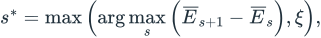

整体概括
真正的问题不是能多快算，而是新观察能否改变动作
移动目标在策略推理和执行时继续动；视觉、语言和本体状态输入策略，输出一组将来的笛卡尔动作。作者用共同策略骨干对照预测时域、执行承诺、调度时序、块衔接及运动线索。在所测动态任务里，快重规划并不自动形成好的闭环反应。
对照原文证据
Vision-Language-Action (VLA) models predict action chunks to support coherent motion with fewer inference calls. When objects move during inference and execution, these predictions can become stale. Shorter execution horizons allow more frequent replanning, but increase inference demand and can introduce discontinuities between chunks. Dynamic manipulation therefore requires balancing observation freshness, computational cost, and execution stability.Given visual observations o_{t} , language instruction \ell , and proprioceptive state p_{t} , the policy predicts an action chunk A_{t}=(a_{t\mid t},\ldots,a_{t+H-1\mid t})\sim\pi_{\theta}(\cdot\mid o_{t},\ell,p_{t}) , where H is the prediction horizon .Predicted actions contain absolute Cartesian positions, quaternion orientations, and gripper commands.优先调系统，再问是否必须重训
有说服力的对照来自同一策略同步与异步的比较，以及同一检查点只改执行步数。传送带上，改执行时域能达到与潜空间强化学习相当的收益；这并不是说学习无用，而是硬件、部署时钟、碰到的目标运动都会改变结论。
对照原文证据
Success on the dynamic DOM task with the same policy ( H{=}25 ) under synchronous and asynchronous execution.On the conveyor task, however, a different execution horizon gained as much without any training. We suggest evaluating the execution strategy together with the policy, and reporting observation age, action availability, and chunk continuity alongside success.Research gap
新动作到了，不代表它能接管
批量预测减少请求次数、带来连贯动作，但块尾可能已经过时；频繁缩短执行又会放大同步等待或独立动作块的跳变。论文把观测的新鲜度、首动作可用时间和轨迹接缝看作不同的问题，不以单项推理耗时充当闭环指标。
对照原文证据
When objects move during inference and execution, these predictions can become stale. Shorter execution horizons allow more frequent replanning, but increase inference demand and can introduce discontinuities between chunks. Dynamic manipulation therefore requires balancing observation freshness, computational cost, and execution stability.Short horizons worked well when inference ran alongside execution and when successive chunks joined smoothly. Lower latency alone did not help. Motion cues and latent steering helped in targeted cases. On the conveyor task, however, a different execution horizon gained as much without any training. We suggest evaluating the execution strategy together with the policy, and reporting observation age, action availability, and chunk continuity alongside success.统一骨干不是给原系统重排榜单
表中划分干预点是为了拆开问题：FASTER 加速动作交付，RTC 限制块切换，ABPolicy 连动作表示也改；PUMA 则改变策略可用的信息。本文把选取的机制迁到共同框架，不能将比较对象当原论文完整系统或基准榜的复现。
对照原文证据
We select approaches that address complementary limitations of dynamic manipulation: temporal commitment, delayed or discontinuous execution, and insufficient motion information or behavioral adaptation. We implement these interventions within a common \pi_{0.5} framework. Table 1 summarizes their intervention points. These configurations adapt selected mechanisms from the original methods rather than reproduce every original system.RTC ✓ Chunk transition FASTER ✓ ✓ Action generation DynamicVLA ✓ ✓ Execution alignment ABPolicy ✓ ✓ ✓ Chunk continuity PUMA ✓ Motion information AAC ✓ ✓ Execution horizon DSRL ✓ Latent steering算法主线
原图由本站加载；若未显示，可打开下方原图链接。
跟着原图读
- 从上往下看两种调度的同一竖位置
上方绿块 Infer 对齐着灰色 Pause，控制器用完当前蓝块才发请求，等待时不运动。横向箭头表示时间，没有刻度。
- 下排先看粉段再看红线
异步的绿块与上一段运动重叠，粉色 Latency 不再表示机械臂空等，但此时观测已经开始变旧；红色细条标示直接切换可能出现跳变。
这是调度示意，不是延迟测量或稳定性证明；红线不能读成每次切换都跳变，也不能保证缓冲永远不空。
许可：CC BY 4.0。完整保留图像像素；PNG 为无损导出，网页只等比例缩放显示。未裁剪、重绘或加注。
动作块和执行承诺分开设
预测长度 H 是一次生成多少步，训练时改它需要分别拟合；执行长度 s 是这次实际消费多少步，改它可以冻结检查点。异步客户端持续更新观测信箱，DynamicVLA 改造版跳过返回时已经过去的动作，并用最短执行窗口抑制过密切换。
对照原文证据
We train separate policies with different prediction horizons H to study the duration of the predicted trajectory. For execution-horizon comparisons, we keep the trained checkpoint and prediction horizon fixed and vary the number of actions consumed from each prediction.The client updates an observation mailbox while inference is running. Each returned chunk is indexed relative to the observation used to generate it, and actions corresponding to elapsed action intervals are discarded before execution.We also introduce a minimum execution window W : a new prediction replaces the current chunk only after at least W actions from the current chunk have been executed.快出动作和顺利衔接，是两套机制
FASTER 优先去噪近端动作，逐步经服务器流出，并以推理期间要执行的动作作为前缀条件。RTC 首块同步填满缓冲，后续推理对重叠动作做软引导、最靠前的执行段引导最强。ABPolicy 学习样条控制点，以过去实际动作重拟合新段的前部，不是要求两批预测完全相同。
对照原文证据
We implement FASTER [ 11 ] using horizon-aware sampling, action streaming, prefix conditioning, and early stopping. The server sends actions as they finish denoising. The client stores the received actions by index and executes them when required. Each request includes the actions expected to be executed during inference, which form the conditioned prefix of the next prediction.The initial RTC chunk is generated synchronously to populate the action buffer. Subsequent requests include the latest observation, the remaining previous prediction, and an estimate of the inference delayDuring denoising, RTC guides the new chunk toward the overlapping actions from the previous prediction. Actions expected to execute during inference receive the strongest guidance. The guidance weight decreases over the remaining overlap, while actions beyond the overlap are generated without this constraint.During refitting, the first N_{\mathrm{free}}=4 control points are optimized against the recently executed actions; the remaining control points retain their predicted values.历史观测可在线读，未来监督只在训练出现
PUMA 在部署端计算历史帧到当前帧的光流；训练时另用目标对象的未来特征监督，教师定位、分割、特征提取只用于事先缓存标靶。DSRL 的 actor 和 critic 可接收短视觉历史，actor 改生成器输入的潜变量，不解冻既有 VLA，也不把未来真值送给执行端。
对照原文证据
Each historical frame is compared with the current frame to compute an optical-flow map, which is encoded alongside the current observations.Four world queries receive supervision from object-centric features at t+4 , t+8 , t+12 , and t+16 . GroundingDINO localizes the target object, SAM2 segments it, and a frozen DINO encoder extracts the target feature. These features are generated once and stored in an offline cache. During training, the corresponding cached features supervise the world queries with a loss weight of 0.05 .The teacher models are used only to prepare training targets. Historical optical flow is computed during inference.The actor and critic receive this temporal representation. The underlying VLA continues to receive its current observation and the selected latent input. Real-robot training uses a binary task-success reward supplied after each rollout.关键公式
不确定性触发不是「看到目标变快」
AAC 先用平行采样得到各步平移、转动及夹爪的动作分布，再取前缀平均熵的最大相邻增量，用运动量阈值给执行时域加下界。它不是比较两个新旧视频中的目标速度，也没有在式中减去请求的等待成本；采样开销在实际流水线计入。
对照原文证据
AAC estimates action uncertainty from N=20 action chunks sampled in parallel and selects an execution horizon using an entropy criterion and a minimum action-magnitude constraint [ 10 ] . Our implementation computes uncertainty over the Cartesian translation, rotation, and gripper components. Gaussian differential entropy is used for continuous actions, while categorical entropy is used for discrete gripper commands. The average entropy \overline{E}_{s} is calculated over the first s actions.Here, m(l) combines accumulated translational displacement, rotational change, and gripper switching, while \alpha denotes the movement threshold.Sampling multiple candidate chunks increases inference latency, which is included in the evaluated execution pipeline.按动作步数覆盖延迟，按秒记录首动作时间
RTC 用实测推理延迟折成动作步数约束时域；表中 TTFA 是从发请求到第一个可执行动作到达的实耗时间，包含通信及请求区间内的环境更新等待。它不等于全块生成用时，也不等于首次拿到相机帧到机械臂真正运动的时间。
对照原文证据
where s_{\min} is the prescribed minimum horizon and d is updated from measured inference delays.TTFA is the interval between sending an observation to the policy server and receiving the first executable action:It includes inference and communication latency, as well as any waiting time imposed by the environment’s update cycle within this request–response interval, and measures how soon an executable action from a new chunk becomes available. For streaming methods, the first action can arrive before generation of the full chunk is complete.AAC：在前缀熵上升处切开，但不能切得太短

教学例：若前一、前二、前三步的平均熵依次为 1.0、1.5、1.6，则相邻增量为 0.5、0.1，取增量最大的索引 1；若运动下界为 2，最终执行 2 步。
符号与实现提醒
- s*、s
- 最优执行步数、候选整数前缀长度。
- Ēₛ
- 前 s 步的平均熵。连续动作由高斯微分熵度量，夹爪用类别熵，注意坐标及量纲。
- ξ
- 由运动量决定的最短前缀步数。
最大化的是相邻前缀均值的增量，不是直接挑单步最高熵。须有下一个前缀可供计算；原文未明确所有候选都不触发时的默认策略。
AAC：先保证该前缀能产生足够动作
教学例：若前缀运动量依次为 0.2、0.4、0.6，门槛为 0.4，则第二步刚好相等不触发，最小满足条件的前缀为 3 步。
符号与实现提醒
- l、ξ
- 候选前缀长度、首个合格长度，以动作步计。
- m(l)
- 前 l 步平移位移、姿态变化和夹爪切换的组合量，不等同于米制路程。
- α
- 与组合量同口径的门槛。
原式是严格大于；不可把示例组合量当作训练数据。角运动和夹爪开关与平移的尺度需按实现对齐。
RTC：用动作步数覆盖测得的延迟
教学例：延迟估计是 7 步，最小执行长度设 5 步，则排 7 步；若延迟降到 3 步，仍排 5 步。这说明实验中名义最小窗与实际执行窗不必相同。
符号与实现提醒
- d
- 从实测推理延迟更新的步数，不是秒。
- sₘᵢₙ
- 部署指定下界，动作步数。
- s
- 执行时域，以步计。
式中不规定秒到步的舍入、延迟尾部分位或缓冲耗尽兜底；也不是一个解析的稳定性保证。
ABPolicy：在参考姿态坐标中拟合旋转
教学例：参考姿态和目标姿态都是单位四元数 (1,0,0,0)，相对旋转还是单位四元数；若参考为单位、目标为绕 z 旋转 180° 的 (0,0,0,1)，结果为 (0,0,0,1)，转换为沿 z 的 π 弧度旋转。
符号与实现提醒
- qᵣₑ𝒻
- 参考单位四元数，四分量；训练用窗口当前分界，推断用当前机械臂姿态。
- qₜ、qᵣₑₗ,ₜ
- 某时刻的旋转、它相对参考姿态的旋转。
- ⊗
- 四元数乘法，不可交换。
应统一分量顺序与乘法约定，避免将 q 与 −q 当作不同姿态；文中对旋转向量拟合，而不是对四个四元数分量直接做样条。
TTFA：请求到第一个可执行动作的时间
教学例：请求发出时间为 1.00 秒，第一个可执行动作在 1.15 秒到达，整块到 1.40 秒才生成完：TTFA 是 0.15 秒，不是 0.40 秒。
符号与实现提醒
- t_request
- 向策略服务端发出观测请求的时间戳，秒。
- t_first
- 收到首个可执行动作时的同钟时间戳，秒。
- TTFA
- 两者之差；不是实机完工时间或相机曝光以来的总延迟。
尽量在同一单调时钟测量。原表成功试验的条件化时间不能与全样本的成功率直接互换。
实验怎么做
模拟训练与评测场景不混着称泛化
DOM 随机化柠檬和碗的初始位置，以 25 Hz 采集 100 条静态与 211 条动态示范；DOMINO 在双臂上使用 30 Hz 的两个任务，每任务 750 条，含干净与扰动环境的示范，但各动态级别用干净环境评估。它不等于在随机纹理和杂物上做测试。
对照原文证据
The initial positions of the lemon and bowl are randomized. The dataset contains 100 static demonstrations and 211 dynamic demonstrations, recorded at 25\,\mathrm{Hz} . In the dynamic setting, the lemon receives an initial velocity uniformly sampled from [0.05,0.25]\,\mathrm{m/s} . Actions are represented in Cartesian space.with the dual-arm Franka Panda embodiment. The simulator operates at 30\,\mathrm{Hz} and uses Cartesian actions. Each task contains three dynamic levels, with 50 clean and 200 randomized demonstrations per level. This gives 750 demonstrations per task and 1,500 across both tasks. Randomization varies background textures, lighting, table height, and tabletop clutter. Evaluation uses the clean environment at each dynamic level.真机把动作速率、控制层和统计分母分开
Franka Panda 动态任务比较通常每任务 20 次，传送带一般比较不含静止带；部分专项设计把目标位置和带速分层，每配置共 45 次。演示 20 Hz，执行 20 或 30 Hz，底层读目标位姿用 100 Hz。另有静态放圆柱任务测时，不能当成动态识别或抓取速度。
对照原文证据
For the general method comparisons, each method is evaluated over 20 trials per task. Conveyor-belt trials vary belt speed, cube position, and cube ordering; stationary-belt trials are excluded from this comparison.For selected experiments, we evaluate nine conditions formed by three target positions and three belt conditions, with five trials per condition, giving 45 trials per configuration.Demonstrations are recorded at 20\,\mathrm{Hz} , while action execution frequencies of 20\,\mathrm{Hz} and 30\,\mathrm{Hz} are evaluated to investigate their influence on task performance.The control layer runs at 100\,\mathrm{Hz} . It reads the latest Cartesian target, limits excessively large position changes, and sends pose commands to the robot. Gripper commands are sent when the requested gripper state changes.算力和代价的报告范围
各任务对基础策略做全量监督微调，A100 上有效 batch size 128；真机客户端连接远端 A100 或 RTX 5090。表中的计时与请求次数仅对成功试验统计，成功率才包含全部试验。复现应同时保存失败试验的时间线，避免把条件化耗时当系统整体服务时延。
对照原文证据
as the base policy and perform full supervised fine-tuning on the demonstrations for each task. Training runs on NVIDIA A100 GPUs with an effective batch size of 128 for all configurations.The policy server runs on a remote A100 GPU node or an NVIDIA GeForce RTX 5090 workstation. The local robot client constructs observations, requests predictions, and buffers returned actions.In the real-robot method comparison, timing and inference-count statistics are computed over successful trials. Success rate uses all evaluation trials.训练预算和复现边界
已读取的来源没有给出当前研究完整代码或检查点入口，也未报告跨配置统一的耗费、显存、重复种子及完整的超参独立选择集。这意味着可对照附录重建协议，但不能默认各改造方法用了同样训练预算，也不能判断预训练数据与评测是否重叠。
提升与证据
时域的两个答案有两个分母
模拟中，DOM 的预测最优点是 25 步，而 DOMINO 是 30 步，按各自控制频率均约一秒。传送带部署却是检查点相关的：1k 最好的执行步数是 5，5k 则是 15。作者把后者的短时域劣势归因于重复落在动作块的慢启动，但这不是对起步行为逐一干预的结果。
对照原文证据
The best prediction horizon is 25 steps on DOM and 30 steps on DOMINO. At their control rates of 25 and 30 Hz, both are one second of motion (Fig. 2 a).The 1k checkpoint works best at s{=}5 and the 5k checkpoint at s{=}15 (Fig. 2 b). The 5k policy barely moves during the first steps of each chunk. If we replan sooner, the robot sees almost the same scene, predicts the same slow start again, and never gets going.异步对照最干净；控制速率比较另算
DOM 用相同模型验证异步相对同步的优势在短执行窗口更明显。快带专项中，同一带速将动作执行由 20 Hz 改为 30 Hz，ABPolicy 从 13% 到 93%，FASTER 从 0% 到 33%，每根柱 15 次。切换图还有未测单元和不同有效时域，不能将整个方法差异都归给平滑。
对照原文证据
On DOM the gap grows as the horizon shrinks (Fig. 3 a).Raising the action rate from 20 to 30 Hz lifts ABPolicy from 13 to 93\% and FASTER from 0 to 33\% on the fast belt (Fig. 3 b).Figure 3: RQ2. (a) Success on the dynamic DOM task with the same policy ( H{=}25 ) under synchronous and asynchronous execution. (b) Conveyor-belt success of the best configuration of each method on the static, slow, and fast belt, and on the fast belt at a higher action rate; each bar is 15 trials. (c) Conveyor-belt success of every method across execution horizons, with synchronous methods above the rule. Blank cells were not evaluated; ABPolicy ( ∗ ) was evaluated only at s=9 , as its effective execution horizon depends on inference delay.更低熵或更快首动作，都不等于更高成功率
在 5090 上，5k 异步策略改用 AAC，报告 TTFA 0.285 秒；固定执行 15 步是 0.143 秒。AAC 的成功子集完成时间更短，但总体成功不及最佳固定窗口；它在慢带仍能并列最佳固定配置。静态圆柱表的 FASTER 首动作更快，也不能当作同硬件同任务的传送带因果对照。
对照原文证据
15 12.1 0.143 s 8.624 s \pi_{0.5} Asynchronous + AAC Adaptive 12.1 0.285 s 7.436 sNVIDIA RTX 5090 GPU. We evaluate asynchronous \pi_{0.5} using the 5k checkpoint and a fixed prediction horizon of H=20 , comparing fixed execution horizons ( s=5,10,15 ) with Adaptive Action Chunking (AAC). Timing and inference-count metrics are averaged over successful trials.AAC never beats the best fixed horizon and fails on the static and fast belts (Fig. 2 c).Table 5 reports inference and execution metrics for the static cylinder placement, with policy inference performed on an NVIDIA A100 GPU and a fixed prediction horizon of H=50运动特征与潜变量调整只局部见效
PUMA 在传送带上胜过基线，滚罐却更差。DSRL 针对性评测报告 DOM 由 32% 到 47%，最难传送带条件由 0% 到 60%；前后分别以 5 与 15 次作为该目标条件的分母。总体图逐条件等权平均而非合并全部试验；同一 1k 检查点也可不训练、仅改执行时域达到 71%。
对照原文证据
PUMA does better than \pi_{0.5} on the conveyor but worse on the rolling can (Fig. 4 a).On the targeted condition, success rises from 32 to 47\% on DOM and from 0 to 60\% on the hardest conveyor case (Fig. 4 b).The original policy is evaluated over five trials per condition across the nine conveyor-belt conditions. After adaptation, the targeted condition receives 15 trials, while each of the eight remaining conditions receives five trials. We report success counts to make the unequal evaluation sizes explicit. When reporting a mean across conditions, we average the nine condition-specific success rates with equal weight. A pooled success rate instead weights conditions by their trial counts.It lifts the 1k checkpoint to 64 – 69\% , but the same checkpoint reaches 71\% at s{=}5 with no training at all (Fig. 2 b).原图由本站加载；若未显示，可打开下方原图链接。
跟着原图读
- 看横轴单位与折线量程
(a) 横轴 H 的单位是秒，三个任务的圈是测试网格中的最佳点，不能称一秒固定最优。(b) 横轴 s 是步数，纵轴从 40% 起；蓝色 1k 在 5 步最高，橙色 5k 在 15 步最高，不能把折线垂直差当成相对百分比。
- 从分组柱找到熵门控失败在哪里
(c) 条纹蓝柱是 AAC，静带和快带分别为 26.7% 和 6.7%；慢带与 s=15 都是 73.3%。Overall 为同一配置的 45 次汇总，不是把每根柱当 45 次或只取慢带。
没有覆盖所有可能执行长度或所有门控方式；AAC 的结论以这一采样、硬件、动作表示和延迟为限。
许可：CC BY 4.0。完整原图区域按 PDF 原样栅格化为 PNG，保留图内坐标、图例及颜色；未重绘、重标或加注。
原图由本站加载；若未显示，可打开下方原图链接。
跟着原图读
- 先看左边的最接近同条件对照
(a) 同一 DOM 策略、H=25，横轴 s 为动作步，纵轴成功率。蓝为同步，橙为异步；2 步时标为 19% 对 32%，25 步时差距较小。
- 再对齐中间的快带两组
(b) Fast 20 Hz 与 Fast 30 Hz 指动作速率不同，而不是带速不同。每柱 15 次，黄色为 ABPolicy，粉色为 FASTER，深蓝为 PUMA；同色跨两组才是最快带条件下的速率对照。
- 最后辨认右侧表的空白与星号
(c) 横线以上是同步；空白表示未测，不是零。95% 带星的 ABPolicy 实际 s=9，不能按图格中心把它重标成 10 步；中图各方法最佳配置也不代表等步数。
跨方法可能同时改了训练、动作表示、延迟处理或最小执行时域；此图不能把所有差异归因于轨迹连续性，也不支持“异步在一切任务都更好”。
许可：CC BY 4.0。完整原图区域按 PDF 原样栅格化为 PNG，保留图内坐标、图例及颜色；未重绘、重标或加注。
局限与追问
低延迟是解释之一，不是独立操纵量
同步与异步用同一策略的比较比跨方法强：各改造配置还改变前缀条件、样条表示、训练和执行时域。ABPolicy 在热图只测了有效时域 9 步，不能把左近位置的格子当成逐点等时域对照；静态圆柱耗时表与传送带结果也不能拼成单一延迟—成功率曲线。
对照原文证据
We implement these interventions within a common \pi_{0.5} framework. Table 1 summarizes their intervention points. These configurations adapt selected mechanisms from the original methods rather than reproduce every original system.Blank cells were not evaluated; ABPolicy ( ∗ ) was evaluated only at s=9 , as its effective execution horizon depends on inference delay.Table 5 reports inference and execution metrics for the static cylinder placement, with policy inference performed on an NVIDIA A100 GPU and a fixed prediction horizon of H=50 (Except ABPolicy, H=32手动环境和小样本让接近的比例难排序
作者说明滚罐和拉杯是人工施加扰动，轨迹无法在各方法间准确重演。小幅百分点差异不宜排序，更不能给不同机械臂的泛化保证。作者将动作块过时及接缝跳变作为解释，但已读取来源未给可隔离这些效应的逐段接缝误差统计。
对照原文证据
Our findings characterise \pi_{0.5} -based adaptations of the evaluated methods on a small set of tasks. Real-robot comparisons use 15–20 trials per setting, and the can and cup tasks rely on manually induced object motion, so small differences should not be over-interpreted.The can and cup are moved manually, so their trajectories cannot be reproduced exactly across methods.连接你的研究
将观测陈旧和动作跳变做成正交对照
固定同一检查点与预测长度，在可控移动台上播放同一组速度和加速度轨迹。交叉切换同步／异步、带／不带接缝约束，另设注入固定延迟而保持动作时域不变的条件。交付每条时间戳、动作接管时的观测年龄、首动作等待、接缝位姿和加速度跳变分位数，以及成功率及按轨迹配对的不确定区间。
把重规划从熵门控改为受益检验
在同一控制频率和推理预算下比较固定时域、AAC、仅当目标位移预测明显改变可达抓取点才触发的门控。验证集固定阈值，在未见速度谱上同时报告抓取成功、错过窗口比例和每秒推理请求；若只有平均时延改善而成功不变，就不宣称闭环收益。
来源与边界
原图按 arXiv 版本记录的 CC BY 4.0 转载，保留作者、完整图件、英文图注和原文页码；不镜像论文 PDF 或全文。中文读图与建议非作者原文。
对照原始英文摘要
收录历史：2026-11-14